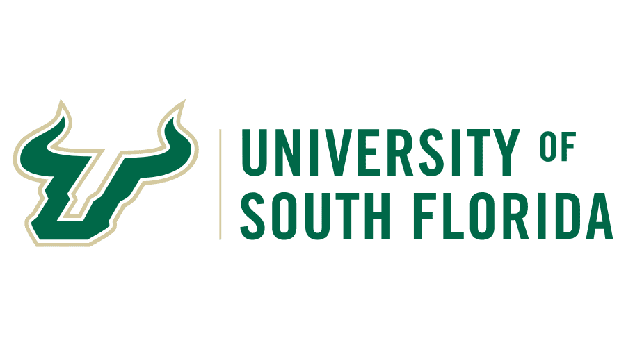
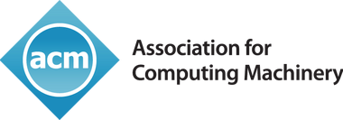

Martin Williams
Aspiring Defensive Security Engineer
| Year | Achievement | Summary |
|---|---|---|
| 2017-2021 |  | Graduated from the University of South Florida with a B.E. in Cybersecurity. |
| 2019 |  | Smart Mirror Project Running off a Raspberry Pi and multiple software API's to display time, weather, calendar screen casting, and can be controlled remotely through voice commands. |
| 2020 | InternshipI effectively implemented robust security measures, mitigated risks, safeguarded our systems against evolving cyber threats, and created/conducted training programs to educate employees. Played a pivotal role in protecting our digital assets and ensuring the confidentiality, integrity, and availability of critical information. |
|
| 2021-2023 | .png) |
Internship to Full-Time Position as Associate IT Compliance Analyst |
5 Things to know about me: